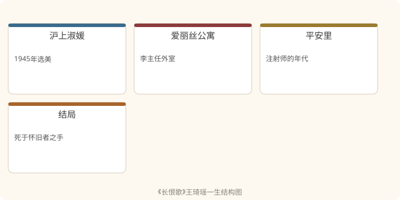

长恨歌
一、基本信息
| 作者 | 王安忆 |
|---|---|
| 成书/出版 | 1995年连载、1996年出版（英文维基口径）；2000年获第五届茅盾文学奖（英文维基） Wang Anyi — Wikipedia (EN)（百科全书） |
| 国别/地区 | 中国 |
| 时代 | 现当代 · 当代 |
| 体裁 | 长篇小说 |
| 语言 | 汉语（白话） |

《长恨歌》王琦瑶一生结构图（主题·结构图）
二、创作背景
英文维基：In 1996, Wang's most famous novel, The Song of Everlasting Sorrow, traces the life story of a young Shanghainese girl from the 1940s all the way till her death after the Cultural Revolution。
英文维基：主人公王琦瑶 is a metaphor for Shanghai: she maintains her pride and her manners, despite her misery（王琦瑶是上海的隐喻——即使困顿也不失骄傲与做派）。
三、内容脉络
第一部：1945年『沪上淑媛』王琦瑶选上海小姐获第三名，成为李主任外室（通说）。
第二、三部：平安里注射师生涯、八十年代的旧梦重温与老克腊们的怀旧的怀旧（通说）。
结局：长脚杀人，王琦瑶死于非命（通说待核）。
四、主要人物表
| 人物 | 身份 | 说明 |
|---|---|---|
| 王琦瑶 | 上海小姐 | 上海的隐喻（英文维基转引） |
| 程先生 | 摄影师 | 忠实的守望者（通说） |
| 李主任 | 军政要员 | 时代的强权（通说） |
| 老克腊 | 怀旧青年 | 90年代的追慕者（通说） |
五、主题与艺术特点
- 上海的市民日常：弄堂、流言、闺阁、鸽子（开篇五章的『城市素描』，通说）。
- 时间与怀旧：今昔互文（通说）。
- 女性命运：以美貌开局的一生（通说）。
六、影响与评论
- 英文维基：2000年获第五届茅盾文学奖；该书使王安忆写作达到巅峰（made Wang's writing reached its peak——英文维基口径）。
Wang Anyi — Wikipedia (EN)（百科全书） - 英文维基：成功令王安忆获得『张爱玲传人』之名（the successor of Eileen Chang），二者皆写上海市民生活——海派。
Wang Anyi — Wikipedia (EN)（百科全书）
七、阅读建议
难点
- 前三章城市散文体——『没有人物』的开头。
- 40年时代变迁的服饰、屋宇细节。
- 《长恨歌》（南海出版公司/人民文学出版社，通说待核）。
对照张爱玲《金锁记》：海派的两种笔法。
八、待核实
- 初刊（《钟山》1995连载说）与单行本（1996作家出版社说）细节待核。
- 王琦瑶原型（1946年上海小姐选美新闻）待核。
- 2005年电影/话剧改编细节（英文维基已载）核对。
本页主要来源
王安忆的其他收录作品：长恨歌